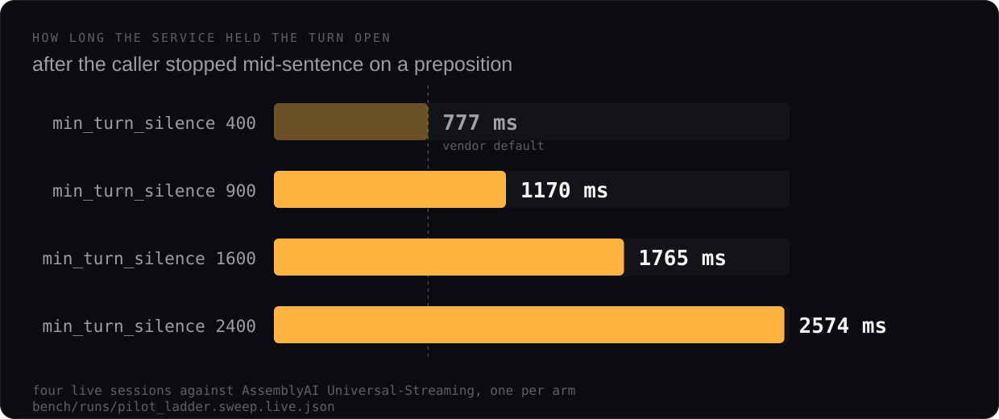

Nod
Voice agents that wait for you to finish.
One knob, swept live. At the vendor default the service
gave a hesitating caller 777 ms. At
min_turn_silence 2400 it gave them 2574 ms,
and took the rest of the sentence as the same turn.
